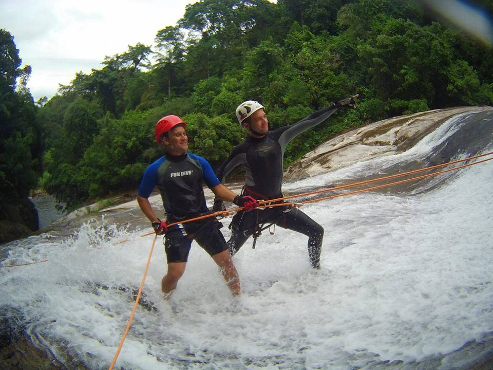
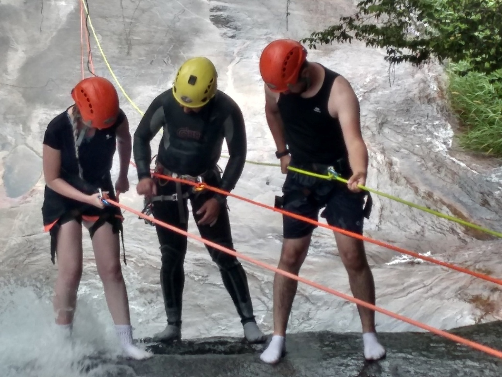
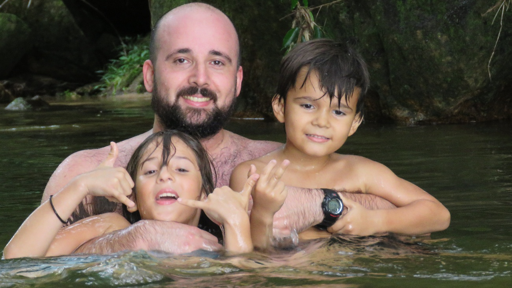
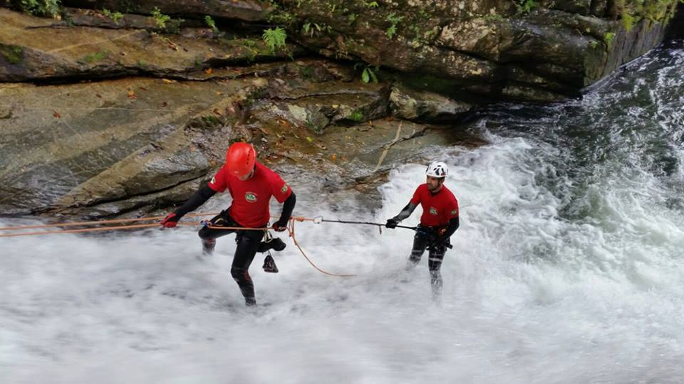
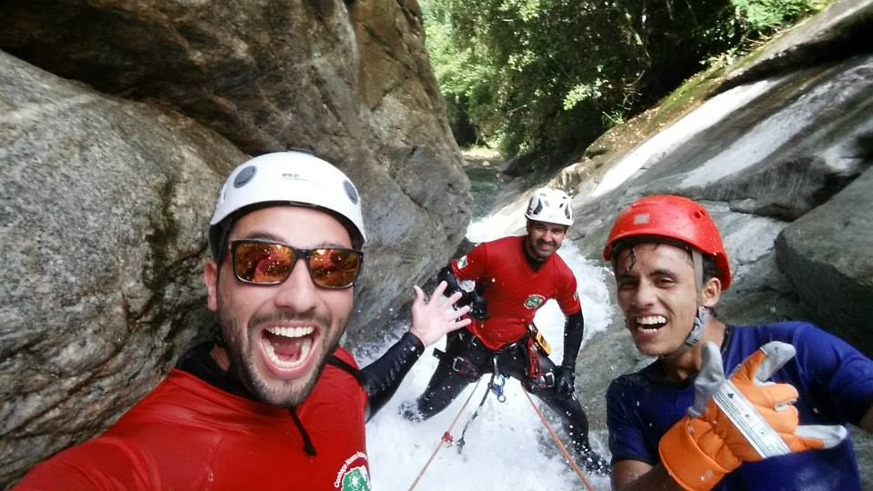
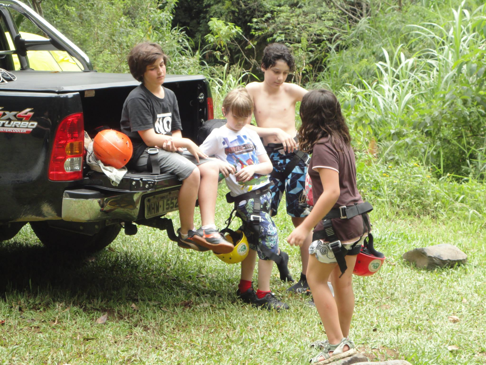
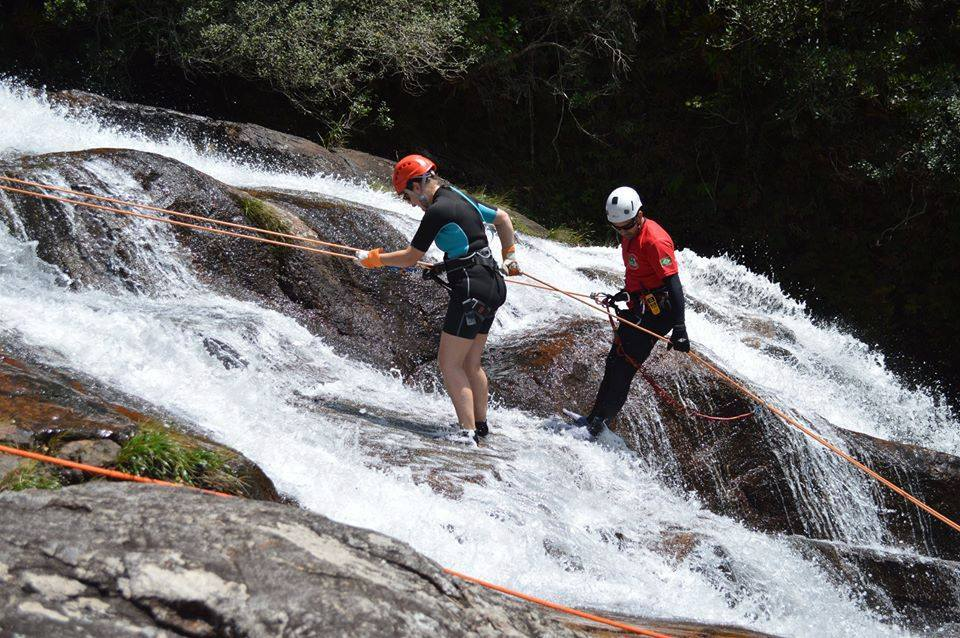

Detalhes do Roteiro
A cachoeira da Quintilha está no curso do rio Brejatuba e o domínio da área é privado. Ela está localizada próximo ao limite do Parque Nacional de Saint-Hilaire/Lange, na Colônia Quintilha, no município de Paranaguá-PR. Destaca-se principalmente pelo seu excelente local para banho. É uma piscina natural de águas cristalinas, onde é impossível apreciar e não sentir vontade de mergulhar em suas águas. Mas não é só isso que impressiona nesta bela cachoeira, com seus enormes paredões de pedras, onde a água que escorre termina em um pequeno canal entre as pedras, como se fosse um toboágua, tem um visual diferente e muito bonito, melhor ainda, é descer os 100 metros de curso de agua praticando o cascading.
Instrutores especializados a técnica vertical;
Todos EPI’S requisitados por normas ao esporte;
Coletes salva vidas (final do rapel em um poço);
Altura da cachoeira: 100 metros de descida em desnível positivo;
Tempo de Caminhada: 20 minutos;
Atividades de aventura: Caminhada, escalaminhada;
Condicionamento físico: Normal;
Atrativos naturais: Mata Atlântica, Cachoeira, Montanhas, trilhas;
Tarifas
| N° de pessoas | Guia bilíngue | Adulto | Criança |
|---|---|---|---|
| 2 a 8 | Não | R$ 400.00 | R$ 300.00 |
| 2 a 8 | Sim | R$ 500.00 | R$ 400.00 |
Galeria de Fotos






